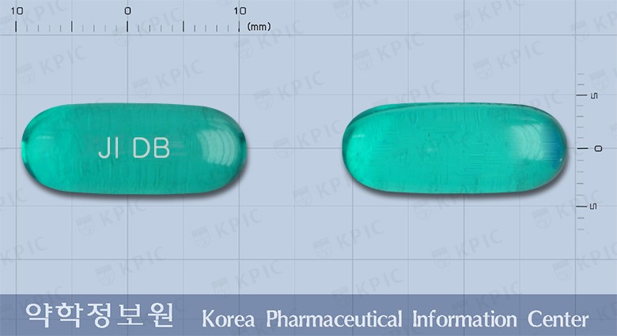
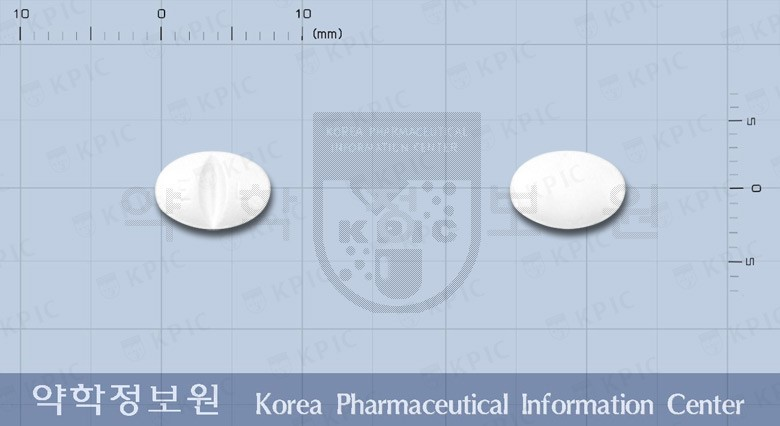
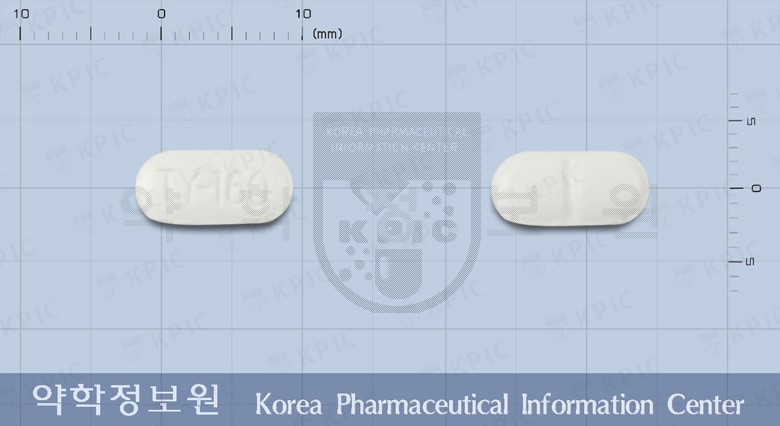
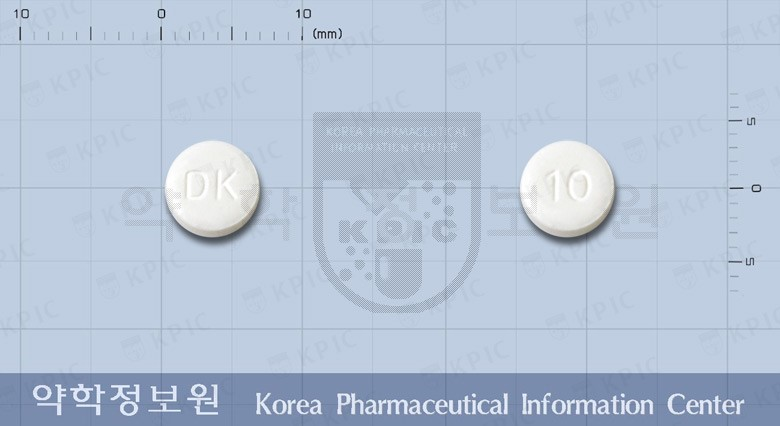
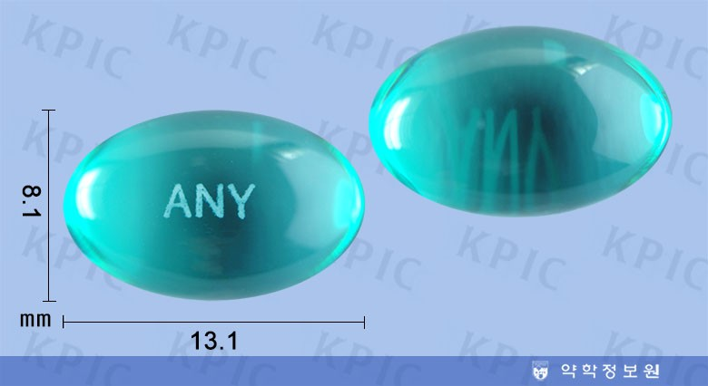
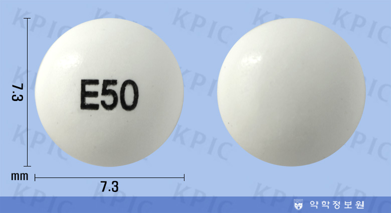
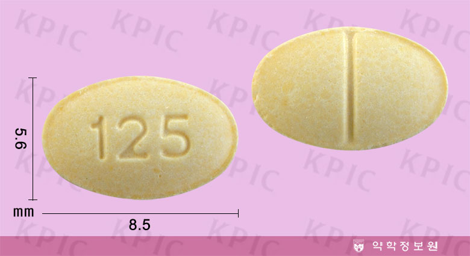

-
 한미아스피린장용정100밀리그램1) 다음 질환에서 혈전 생성 억제 · 심근경색 · 뇌경색 · 불안정형 협심증 2) 관상동맥 우회술(CABG) 또는 경피경관 관상동맥 성형술(PTCA) 후 혈전 생성 억제 3) 고위험군환자(허혈성 심장질환의 가족력, 고혈압, 고콜레스테롤혈증, 비만, 당뇨 등 복합적 위험인자를 가진 환자)에서 심혈관계 위험성 감소
한미아스피린장용정100밀리그램1) 다음 질환에서 혈전 생성 억제 · 심근경색 · 뇌경색 · 불안정형 협심증 2) 관상동맥 우회술(CABG) 또는 경피경관 관상동맥 성형술(PTCA) 후 혈전 생성 억제 3) 고위험군환자(허혈성 심장질환의 가족력, 고혈압, 고콜레스테롤혈증, 비만, 당뇨 등 복합적 위험인자를 가진 환자)에서 심혈관계 위험성 감소 -
덱시부펜연질캡슐1. 주효능·효과 감기로 인한 발열 및 동통(통증), 두통, 신경통, 근육통, 월경통, 염좌통(삔 통증) 2. 다음 질환에도 사용할 수 있다. 치통, 관절통, 류마티양 동통(통증)
-
렉사프로정 10mg1. 만성 다발성 관절염, 류마티스관절염 2. 관절증 3. 강직척추염 4. 외상 및 수술 후 통증성 부종(부기) 또는 염증 5. 염증, 통증 및 발열을 수반하는 감염증의 치료보조
-
타이레놀정 160mg1. 주효능·효과 감기로 인한 발열 및 동통(통증), 두통, 신경통, 근육통, 월경통, 염좌통(삔 통증) 2. 다음 질환에도 사용할 수 있다. 치통, 관절통, 류마티양 동통(통증)
-
인데놀정 10mg1. 기외수축(상실성, 심실성), 발작성빈맥의 예방, 빈맥성심방세동, 발작성심방세동, 동빈맥, 협심증, 고혈압, 비후성대동맥판하협착증, 크롬친화세포종 2. 갑상샘중독증의 보조요법
-
이지엔6애니연질캡슐1. 주효능 효과 - 감기로 인한 발열 및 동통(통증), 요통, 생리통, 류마티양 관절염, 연소성(어리거나 젊은나이에 나타나는) 류마티양 관절염, 골관절염(퇴행성 관절질환), 수술후 동통(통증) 2. 다음 질환에도 사용할 수 있다. - 두통, 편두통, 치통, 근육통, 신경통, 강직성 척추염, 급성통풍, 건선(마른비닐증)성 관절염, 연조직손상(염좌(삠), 좌상(타박상)), 비관절 류마티스질환(건염(힘줄염), 건초염(힘줄윤활막염), 활액(윤활)낭염) [네이버 지식백과] 이지엔6애니연질캡슐 [EZN6any Soft Cap.] (의약품 사전)
-
레페리손정1. 근골격계질환에 수반하는 동통성 근육연축 : 경견완증후군, 견관절주위염, 요통 2. 신경계 질환에 의한 경직성 마비 : 뇌혈관장애, 경직성 척수마비, 경부척추증, 수술후 후유증(뇌·척수종양 포함), 외상후유증(척수손상, 두부외상), 근위축성 축색경화증, 뇌성마비, 척수소뇌변성증, 척수혈관장애, 아급성 척수시신경병변, 기타의 뇌척수질환
-
자나팜정 0.125mg(경구 : 정제) 1. 불안장애의 치료 및 불안증상의 단기완화 2. 우울증에 수반하는 불안 3. 정신신체장애(위·십이지장궤양, 과민성대장증후군, 자율신경실조증)에서의 불안·긴장·우울·수면장애 4. 공황장애